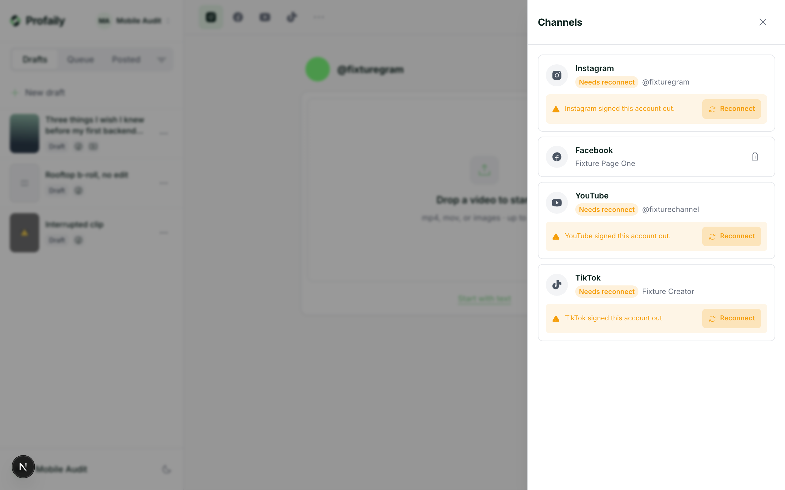

Keep video operations moving
Bulk video intake, structured review, a shared calendar, and clear publishing history help coordinate a busy video operation.

Plan, schedule, and publish across TikTok, Instagram, YouTube, and Facebook. Automate audience conversations, qualify leads, and use performance insights to decide what to do next.
Connect video planning and publishing to audience response, lead follow-up, and performance learning while keeping each step visible and under control.
Bulk video intake, structured review, a shared calendar, and clear publishing history help coordinate a busy video operation.
Check account, media, and post readiness. Track each destination and see what needs attention.
Manage eligible conversations, qualify interest, route leads, and connect results back to the video that started them.
Keep connected accounts beside the videos you are preparing, scheduling, and publishing. The workflow is designed for a clear daily view across destinations.

Keep your original video intact while shaping the caption, title, and available post details for each platform. Review each platform’s post details before they go out.

Move each video through planning, publishing, audience conversations, lead follow-up, and learning.
Bring videos in, review details, and manage the shared calendar and queue.
Explore video planning & publishing →Check readiness, track each platform attempt, and see what needs attention.
Explore publishing protection →Bring eligible comments and supported messages from connected socials into one inbox for response and handoff.
Explore the unified inbox →Capture relevant interest, set ownership, and connect each lead to a clear next action.
Explore revenue workflows →Use performance signals and their context to decide which videos to repeat or what to test next.
Explore video performance insights →Explore the capabilities behind the full short-form video marketing workflow.
Bring videos in, check the details, coordinate schedules, and keep every post traceable across channels.
Check the account, media, metadata, schedule, and platform requirements before publishing.
Bring eligible comments and supported messages from connected socials into one human and automated conversation view.
Capture structured interest from comments and messages, qualify it, route it to the right owner, and connect the outcome back to the video that started the conversation.
Bring performance and audience signals into the publishing workflow.
Explore every capability and see how Profaily connects the video marketing workflow.
Keep network-specific controls and business value in view from a single video operation.
Prepare short-form video for TikTok, review the controls available to your connected account, schedule or publish, and follow its status.
Keep Instagram Reels in the same video-first operation as your other channels.
Prepare the video, title, description, audience details, and visibility for YouTube.
Prepare Reels and videos for the right Facebook Page, set the Page-level details, schedule with the shared video calendar, and track each result.